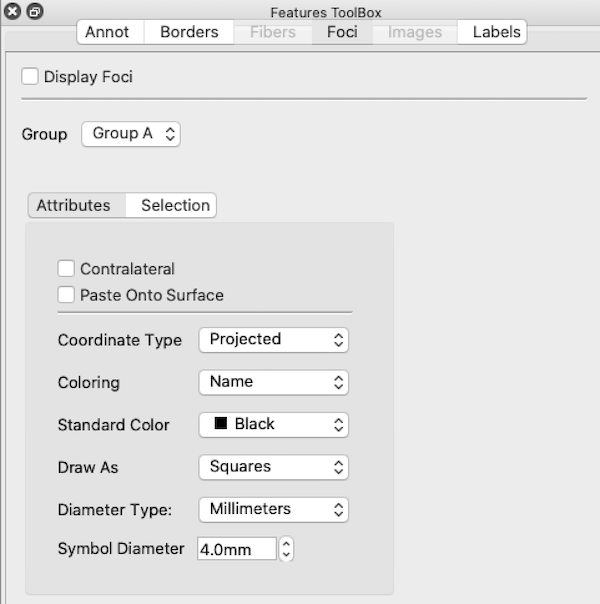

Foci
The Foci Tab in the Features Toolbox
contains options for display and selection of loaded and newly
created foci on brain surfaces and in volumes.
- Display Foci toggles foci
display on and off. When Foci Mode
is turned on, Display Foci is NOT turned on by default.
- Group: identifies the Foci group
for the Active Tab. Tabs assigned to the same Group will
display the same foci with the same attributes.
- Foci Attributes contains options
for viewing foci.
- Contralateral check box toggles
on display of foci that are currently being displayed on one
hemisphere to be displayed on the contralateral hemisphere
(on top of that hemisphere's own displayed foci, if any).
- Paste Onto Surface moves the
foci from their coordinate space to the nearest point
directly on the surface displayed.
- Coordinate Type Chooses coordinates
for positioning foci. Projected displays foci at their projected
to surface coordinates that place for at the correct, relative
position on all surface types. Stereotaxic displays foci at
their original stereotaxic coordinates and should only be
used with Anatomical Surface or Volume Slices.
- Coloring sets the Class, Name or Standard Color
as the foci color source.
- Standard Color selects the color when Coloring is set to Standard Color.
- Draw As sets the shape of the
foci to Spheres or Squares.
- Diameter Type Selects how
diameter of foci is determined. Millimeters uses millimeters but
may not work well when viewing brains of different sizdes (species).
Percentage sizes the symbols as a percentage of the window's
height and works well for inter-species comparisons.
- Symbol Diameter sets the size of
the foci symbols.

- Foci Selection controls group and
individual display selection for foci. If a higher level group
is selected on or off, all foci below that level will be
similarly selected on/off. The All On/Off buttons
allow for quick toggling of all foci on or off.